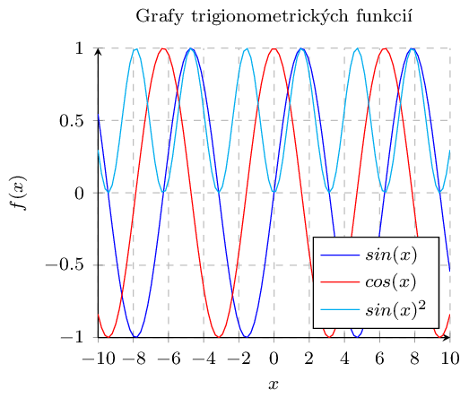
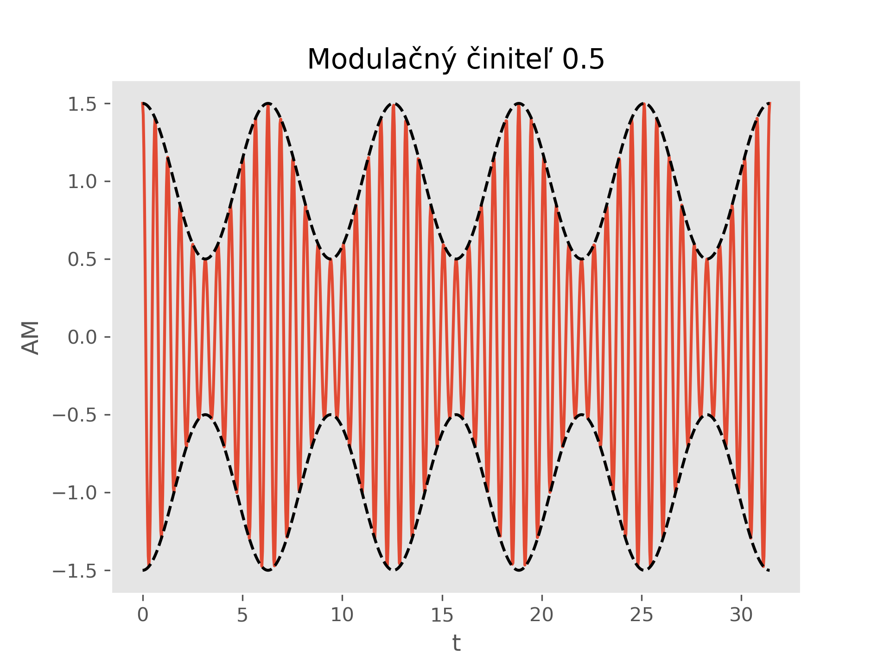

Vizualizácia dát #
Zobrazenie numerických údajov v grafickej forme je dôležitým krokom pri analýze, spracovaní a interpretácií dát. Správne zvolená forma grafického zobrazenie môže zobraziť vzťahy a javy, ktoré nemusia byť pri zobrazení v číselnej forme zjavné. Pre prevod numerických dát do grafickej formy existuje veľa programových prostriedkov, od univerzálnych prostredí a knižníc po špecializované a tématicky zamerané systémy. V prostredí Sphinx môžeme jednoduchšie grafy vytvárať priamo v texte dokumentu pomocou makier pgfplots, pre komplikovanejšie grafy môžeme použiť programové prostriedky, ktoré umožňujú export do vhodného bitového alebo vektorového formátu.
pgfplots #
pgfplots je nadstavbou knižnice makier PGF/TikZ pre kreslenie grafov. Knižnica obsahuje makrá pre kreslenie grafov, ktoré značne uľahčujú prácu so samotnou knižnicou TikZ. Ku knižnici je dostupná rozsiahla dokumentácia ako aj množstvo príkladov použitia v on-line galériách.
Inštalácia
Knižnica pgfplots je súčasťiu distribúcie LaTeX a do prostredia Sphinx ju zaradíme ako doplnkový balík pre LaTeX v súbore config.py v slovníku latex_elements
latex_elements = {
...
'extrapackages': r'\usepackage{pgfplots}',
...
}

Zdrojový kód obrázku
```{tikz}
\begin{tikzpicture}
\pgfplotsset{
small/.style={ % nastavenie formatovania grafu
width=7.0cm, % sirka
height=, % vyska - automaticky
tick label style={font=\scriptsize}, % velkost pisma na osiach
label style={font=\footnotesize}, % velkost pisma popisu osi
legend style={font=\scriptsize}, % velkost pisma legendy
title style={font=\scriptsize}, % velkost pisma nadpisu grafu
max space between ticks=25, % hustota mriezky grafu
},
}
\begin{axis}[ % nastavenie parametrov osi a obsahu grafu
small, % vyber formatovania grafu
title=Grafy trigionometrických funkcií, % nadpis grafu
axis lines = left, % poloha osi
xlabel = $x$, % popis osi
ylabel = $f(x)$,
ymajorgrids=true, % zobrazenie mriezky pre osi
xmajorgrids=true,
grid style=dashed, % typ mriezky
legend style={ % formatovanie legendy
cells={anchor=west}, % umiestnenie textu v legende
legend pos=south east, % umiestnenie legendy v grafe
},
]
\addplot [ % zobrazenie funkcie na grafe
domain=-10:10, % rozsah hodnot premennej funkcie
samples=100, % pocet vzoriek
color=blue, % farba
]
{ sin(deg(x)) }; % definicia funkcie
\addlegendentry{ $sin(x)$ } % pridanie do legendy s textom
\addplot [
domain=-10:10,
samples=100,
color=red,
]
{cos(deg(x))};
\addlegendentry{ $cos(x)$ }
\addplot [
domain=-10:10,
samples=100,
color=cyan,
]
{pow(sin(deg(x)),2)};
\addlegendentry{ $sin(x)^2$ }
\end{axis} % koniec bloku
\end{tikzpicture} % koniec prostredia
```
matplotlib #
Pre vkladanie grafov do prostredia Sphinx môžeme použiť populárnu knižnicu matplotlib pre jazyk Python. Výstup grafov môžeme realizovať pomocou exportu do rastrového obrázku alebo do makier TikZ.
Inštalácia
Pre export do makier TikZ musíme doinštalovať pomocnú knižnicu matplot2tikz
pip install matplot2tikz
{kind=link}

Obr. 19 Graf vytvorený v knižnici matplotlib,#
Zdrojový kód obrázku
from numpy import *
import pylab as plt
plt.rcParams['figure.dpi'] = 300
plt.style.use("ggplot")
T = linspace(0, 5*pi*2, 1000) # 2*pi*t
m = 0.5
A0 = 1
ct = A0*(1 + m*cos(T)) # modulacny signal
am = ct * cos(10*T) # amplitudova modulacia
plt.plot(T, am)
plt.plot(T, ct, 'k--')
plt.plot(T,-ct, 'k--')
plt.title(r'Modulačný činiteľ ' + str(m))
plt.grid()
plt.xlabel('t')
plt.ylabel('AM')
Export grafu do formátu png
Doplnením do zdrojového kódu grafu uložíme graf ako rastrový obrázok.
plt.savefig('am_signal.png', dpi=300)
plt.close()
Vygenerovaný obrázok zobrazíme pomocou direktívy {figure}. Na obrázok sa môžeme odkazovať referenciou.
```{figure} am_signal.png
:width: 600px
:name: sig_01
Graf vytvorený v knižnici *matplotlib*.
```
Export grafu do formátu do makier TikZ
Doplnením do zdrojového kódu grafu uložíme graf do makier TikZ
import matplot2tikz
matplot2tikz.clean_figure()
matplot2tikz.save(" am_signal.tex")
Vygenerovaný obrázok zobrazíme pomocou direktívy {tikz}.
```{tikz} Graf vytvorený v knižnici *matplotlib*
:include: ./py/test.tex
:xscale: 75
```
https://lpn-doc-sphinx-primer.readthedocs.io/en/latest/concepts.html
https://lpn-doc-sphinx-primer.readthedocs.io/en/latest/extensions/matplotlib.html
https://lpn-doc-sphinx-primer.readthedocs.io/en/latest/extensions/tikz/tikztiming.html
Galéria PGFPlots